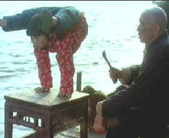

|

|
|
The Golden Bowl has been cited as an ISF Reference
DVD.
Click the ISF image for the complete list of ISF cited DVDs. |
CURRENT DVD REVIEWS |
| Love Me Tender/ C+, B+ |
| Flaming Star/ B, B |
| Charlotte Gray (SE)/ B+, A- |
| John Q. (SE)/ D+, A- |
| Say Anything (SE)/ B+, B |
| Man of the Century (SE)/ B+, A- |
| Collateral Damage (SE)/ C+, A- |
| S.O.B./ C+, B+ |
| Skin Deep/ C+, B |
| Two Family House/ B, B+ |
| Charlie's Angels (SE)/ C, B+ |
| Victor/Victoria (SE)/ A,B+ |
| Great Race, The/ B+, B+ |
| Lagaan/ C, C+ |
| Circus (SE)/ C+, A |
| To Gillian on Her 37th
Birthday/ B-, C+ |
| Audition (SE)/ A-,B |
| Kansas City Confidential/ B, C- |
| Amélie (SE)/ B+, A- |
| Big Heat, The/ B+, B+ |
| Fathom/ C+,C |
| Our Lady of the
Assassins/B+,B+ |
| Gosford Park (SE)/ A, A |
| Hombre/ B, B+ |
| Atlantic City/ A, A- |
| Monster's Ball (SE)/ B+, B+ |
| Majestic, The (SE)/ C+, A |
| Kate and Leopold (SE)/ B, B+ |
| A Beautiful Mind (SE)/ A-,A |
| Witness for the Prosecution/
B+, B |
| Memento (SE)/ A, A |
| Harry Potter and the
Sorcerer's Stone (SE)/ B+, A |
| Sorry, Wrong Number/ B, B |
| Key Largo/ A-, A- |
| Vanilla Sky (SE)/ C+, A |
| My First Mister (SE)/ B, B+ |
| Bite the Bullet/ B, C+ |
| Bob Le Flambeur (SE)/ A-, B |
| Black Knight (SE)/ C, A- |
| Vikings, The (SE)/ B, B |
| Ali/ B, A- |
| Gambler, The (1974)/ B+, B- |
| Fatal Attraction (SE)/ B+, B |
| It
Came From Outer Space (SE)/ B, B+ |
| Requiem for a Heavyweight/ B+,B+ |
| Calamity Jane/ A-, B+ |
| Barcelona (SE)/ A-, B |
| Cowboy/ B, C |
| Harvey Girls (SE)/ B+, B+ |
| Serendipity (SE)/ B, B+ |
| Texas Rangers/ C+, C+ |
| Dancing at the Blue Iguana (SE)/ C+, A- |
| Domestic Disturbance (SE)/ C, B+ |
| Bread and Tulips/ B+, B+ |
| Behind Enemy Lines (SE)/ B-, A |
| Metropolis (Anime) SE/ B, B |
| Accused, The/ B+, B+ |
| Projectionist, The/ C+, C+ |
| Tall Guy, The/ B+, B |
| Life on a String/ B+, D- |
| Mulholland Dr./ B+, B+ |
| Omaha (SE)/ C+, D |
| Life as a House (SE)/ B-,B |
| Spy Game (SE)/ B-,A |
| Sexy Beast (SE)/ B+, A- |
| Party, The/ B, C |
| Fresh (SE)/ A-, A- |
| Eat, Drink, Man, Woman/ B+, A- |
| K-Pax (SE)/ B+, A |
| Strictly Ballroom (SE)/ A-, B+ |
| Training Day (SE)/ B+, A (F) |
| Purple Noon/ B+, C+ |
|


Films on Disc has been sited by Classic Movies as one of their
Best New Links.

The editors of Britannica.com have selected Films on Disc as one of
the best on the Internet when reviewed for quality, accuracy of
content, presentation and usability.
© 2002 Films on
Disc
Stuart J. Kobak
ALL RIGHTS RESERVED. |
|
|
| |
| King
of Masks/A-,C |
|
Columbia/1996/101m/PS
1.33
|
|
Despite
a sub-par transfer, The
King
of Masks is an extraordinarily beautiful film
not to be missed on DVD. |
This
remarkable tale of an aging street performer whose his art will
die unless he passes it on to a son is told with poetic vision
by Chinese director Wu Tianming. Wu paints the story with the
same grand craft that the performer, known as The King of
Masks,
paints his marks and plies his art. The act we see is beautiful
for its simplicity. The King of Masks changes his apparition
with the magic wave of a hand in front of his face, changing
masks with the same sleight of hand that a magician makes objects
appear and disappear.
|
 |
| The
King of Masks teaches his girl.
©Goldwyn |
We pick up
the tale of The King of Masks as the old performer is searching
for a son to adopt. In his desperation, he adopts a girl posing
as a boy. While she is devoted to him and learns quickly, the
revelation that she is a girl is devastating. Her devotion
backfires when she tries to give her mentor what he wants.
Don't look
for predictability in this moving tale set in the streets of
Sichuan province during the late 1930s. There's plenty of charm,
a colorful arena, and a satisfying conclusion.
This is a very
disappointing transfer. It is Pan and Scan or cropped, I am not
sure which, but some scenes are definitely cramped with
peripheral figures cut off. The film was shot spherical for 1.85
presentation, and I presume open matte, meaning that an image
exposing the entire 1.33 negative was available to be matted in
projection. A quick comparison to the theatrical trailer
included on the DVD, and by God, you can readily see the best
possible image is not on this DVD. Usually trailers look much
worse than the finished product we see as the feature, but the
opposite is true here. The trailer is sharper with more vivid
color. The sound is a disaster of its own. Dialogue is delivered
at a wide range of levels. Sometimes it sounds like the voices
have been recorded with reverb. The lovely score is not in
balance with the dialogue, often overpowering it. The film is
presented in Chinese with a choice for English, French or
Spanish yellow subtitles.
|
|

The
Exquisite Muse of Zhang Yimou

The powerful image-making of Zhang
Yimou has revealed itself in virtually every film he has made.
Coupled with his remarkable collaboration with actress Gong Li,
Zhang's has built a stunning body of work Click the image to read
all about it.

 Direct
from the corridors of the Home
Theater Forum, Home Theater Talk is
the newest place on the Net to
discuss everything home theater.
Friendly atmosphere and
knowledgeable folks are the secret
ingredients. Direct
from the corridors of the Home
Theater Forum, Home Theater Talk is
the newest place on the Net to
discuss everything home theater.
Friendly atmosphere and
knowledgeable folks are the secret
ingredients.

ReelUniverse.com is
the home of the true Indies. You
will find links to many independent
filmmakers selling VHS copies of
their films that have not yet gotten
commercial release. None of the
filmmakers represented on the site
have DVD product available, but
here's hoping.
 Sight
and Sound Magazine is the venerable voice of The British Film
Institute. The site includes articles and film reviews. A great
resource in print and on the Internet. Sight
and Sound Magazine is the venerable voice of The British Film
Institute. The site includes articles and film reviews. A great
resource in print and on the Internet.
 Lovers
of Hong Kong movies will relish
MC4's site that includes reviews and other information
about the Hong Kong movie scene. Lovers
of Hong Kong movies will relish
MC4's site that includes reviews and other information
about the Hong Kong movie scene.

The
Movie Poster Archive include extensive poster images from the
films of stars like Susan Hayward, Kirk Douglas, Katharine
Hepburn and many more. This month's featured star is Robert
Mitchum
|
|